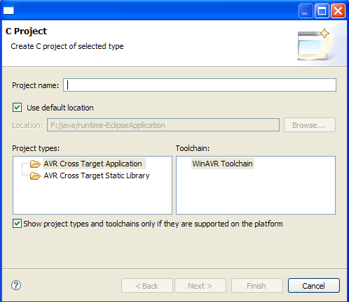
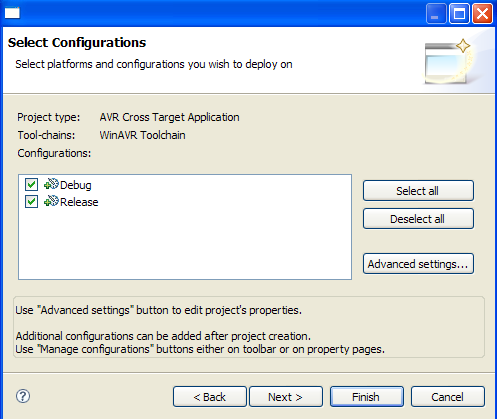

The C Project wizard opens:

The AVR Plugin provides two new project types:
| AVR Cross Target Application | Project suitable for applications that can be loaded onto an AVR device. |
| AVR Cross Target Static Library | Project suitable for building a static library of commonly used functions, which can be linked into applications |
Some other project types such as Executable may show up, depending on wich other toolchains have been installed.
For this tutorial we will build an application so select AVR Cross Target Application
Enter a project name (e.g. "AVRtest") into the Project name field.
Click Next >
Now the automatic build configurations can be selected.

A Configuration is a collection of options and settings for building the project. The AVR Plugin has two default configurations:
| Debug | Settings suitable for debugging the application in a simulator. |
| Release | Settings suitable for generating the hex dump files which can be downloaded to the actual device. |
Other configurations can be created, either at this point via the Advanced settings... button or anytime later once the project has been created. The configurations can be used to apply specific options to the project. For example, to build the same sources for different target MCUs or different target hardware clocks create multiple new configurations, e.g. "ATmega16_1Mhz" and "ATmega32_4Mhz", and configure each with the required settings.
The options and settings for each configuration can be changed with the Advanced settings... button or, once the project has been created, via the project properties.
On the next page the target processor and its target clock frequency can be selected.

Two items specific to the AVR processors can be changed.
| MCU Type | Select the target processor for your project out of the list of selected processor types. This setting is used by some tools of the toolchain to generate the correct code for the target processor. |
| MCU Frequency | Select the target clock frequency for your project. This is just passed on to the compiler as a #define F_CPU <MCU Frequency> , which programms requiring exact timing can use for their internal timing calculations. |
For now we leave the defaults and
If a message box prompts you to change perspectives, click Yes.